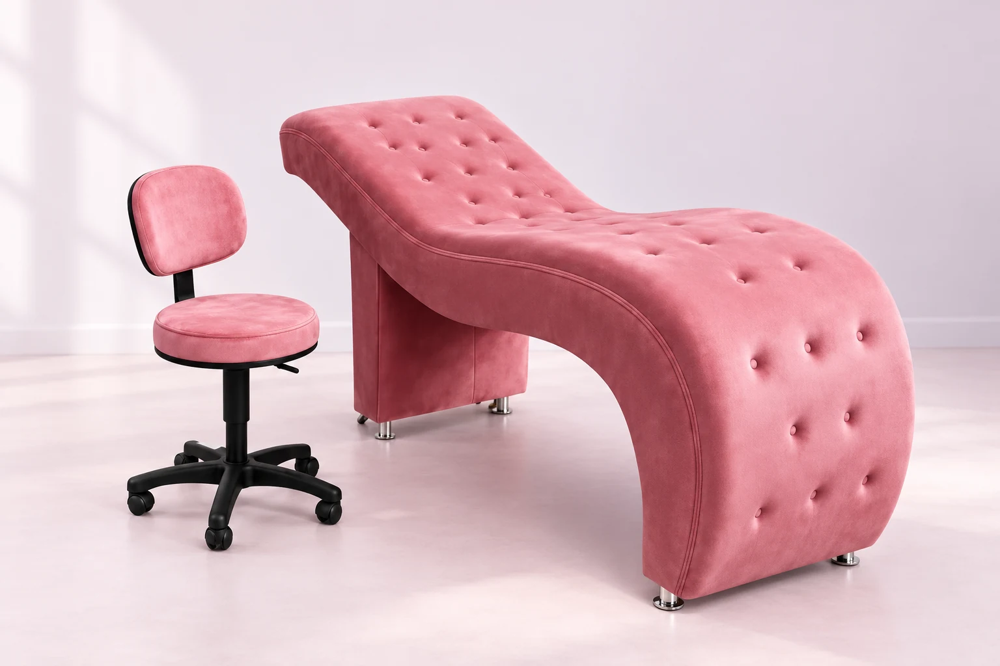
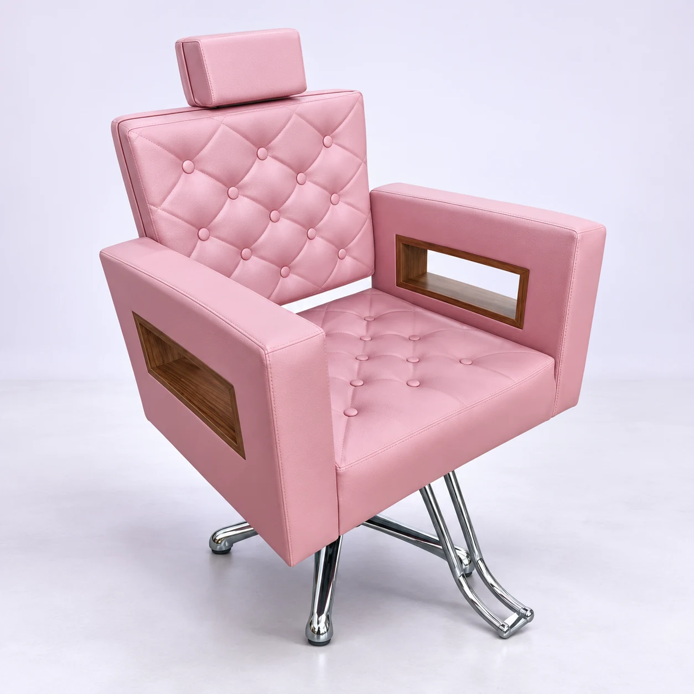
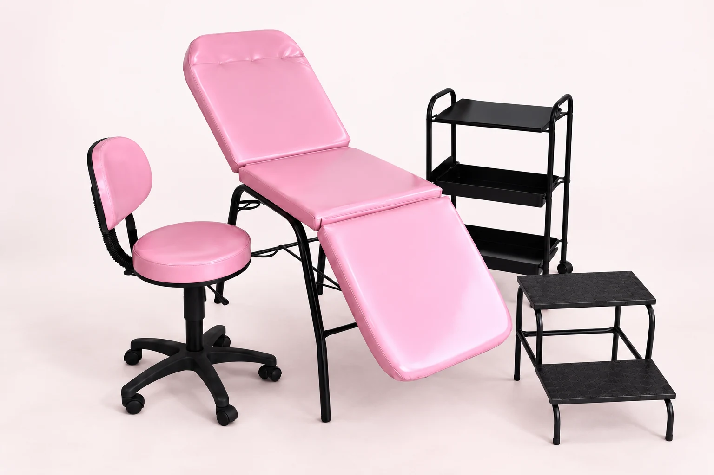
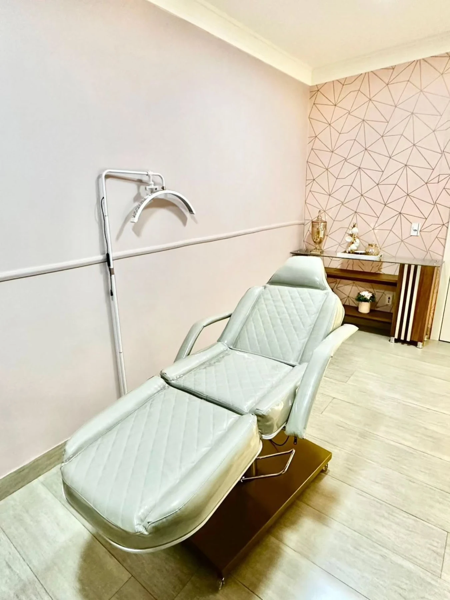
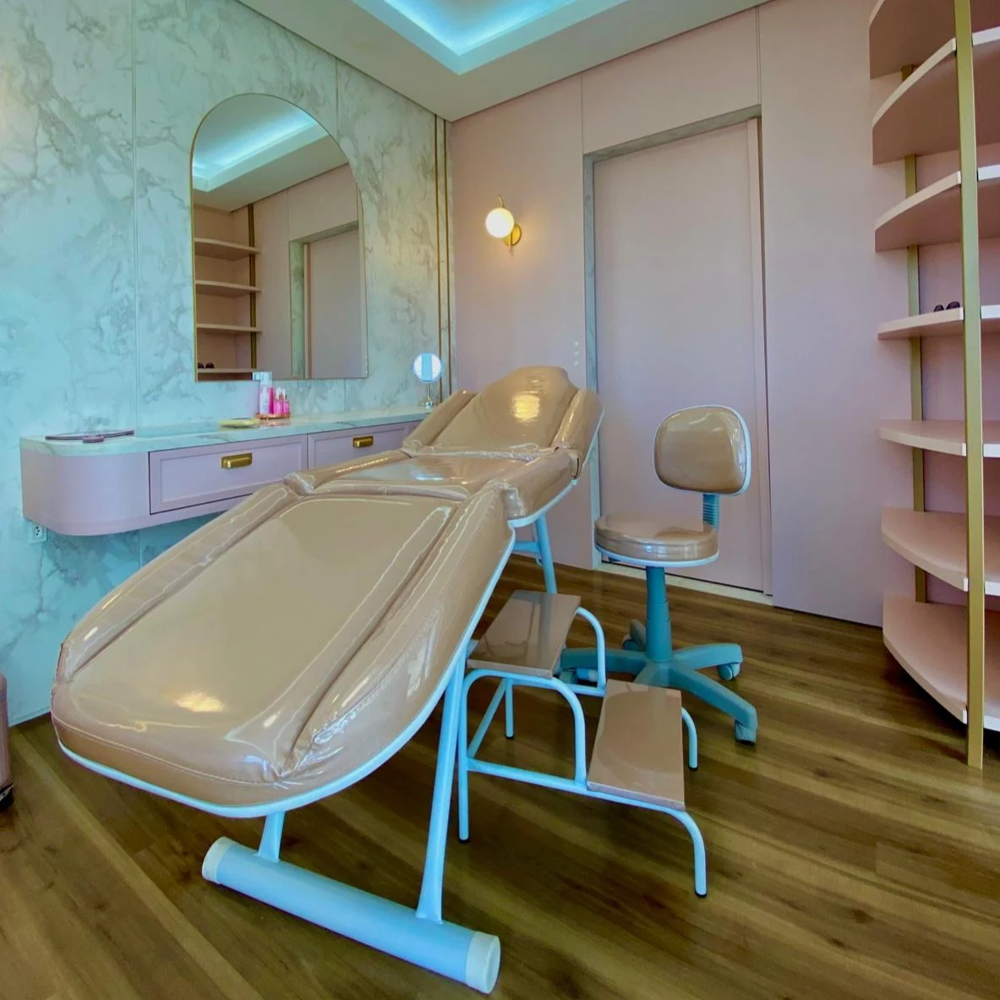
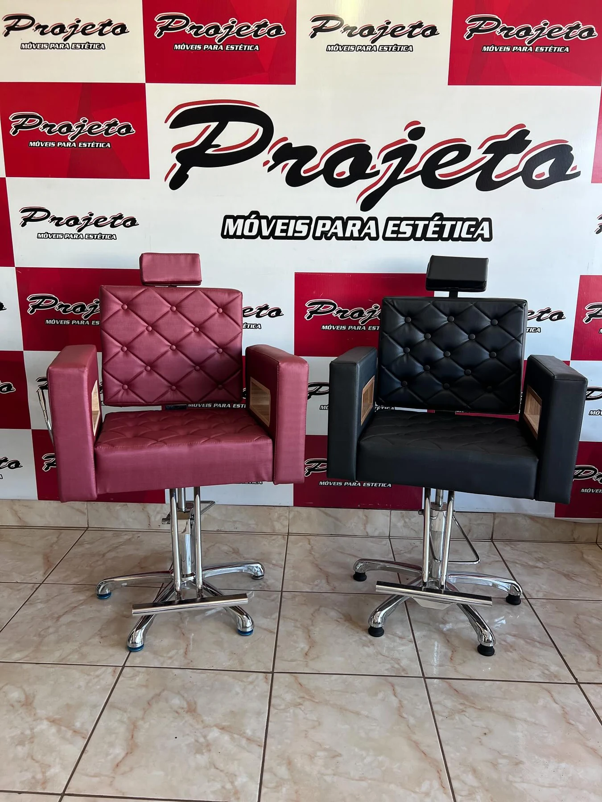
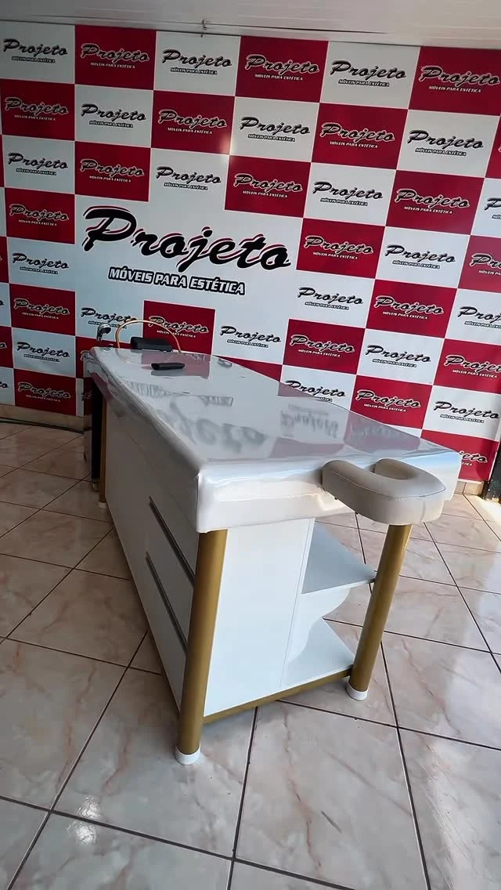

Seu espaço começa pelos móveis.

Ambientação com IAVer original
Kits para reunir as peças. Macas e poltronas para compor o ambiente. Escolha uma referência e converse sobre medidas, acabamentos e composição.
Do conjunto completo à peça que faltava.
Um kit pode reunir maca, mocho, carrinho e escada. Uma poltrona pode trazer outra linguagem para o ambiente, com capitonê, base cromada ou braços vazados.
A seleção da Projeto reúne peças em fotografias da loja e ambientações identificadas, sempre com o registro de origem disponível. Você pode escolher pelo uso, pelo formato ou pelo acabamento que chamou sua atenção.
Levar uma referência para o WhatsAppEscolha pelo uso.
Encontre o seu conjunto.
Oito referências entre kits, macas e poltronas. Veja as peças e leve a publicação junto na sua consulta.
Kit lilás com carrinho e mocho
Maca/poltrona lilás, mocho com encosto, carrinho de três bandejas e escada de dois degraus.
Ambientação com IAVer original


Maca curva rosa com mocho
Uma peça de contorno contínuo e capitonê, acompanhada de mocho no mesmo tom.
Ambientação com IAVer original


Poltrona rosa com braços vazados
Capitonê, apoio de cabeça e insertos amadeirados nos braços, com base cromada curva.
Ambientação com IAVer original


Kit rosa de três posições
Maca em três seções, mocho, carrinho de três bandejas e escada com dois degraus.
Ambientação com IAVer original


Maca clara com base em tom dourado
Revestimento claro com desenho em losangos, apoios laterais e base baixa, já no ambiente.


Kit claro no estúdio
Maca, mocho e escada de dois degraus em uma composição de revestimento claro e estrutura branca.


Poltronas com base de coluna
Duas referências lado a lado: rosa e preta, com capitonê e apoio para os pés.


Maca branca com gabinete
Superfície estofada sobre gabinete com gavetas e nicho aberto, em estrutura de tom dourado.
Outros ângulos e detalhes estão no perfil da loja.
Explorar o InstagramUma boa escolha começa com as perguntas certas.
Prepare a referência e conte como é seu espaço. A equipe pode confirmar os detalhes da peça e as opções para sua consulta.
Quais peças compõem o conjunto?
Use a publicação para indicar o kit que você gostou. Confirme com a equipe quais itens acompanham a opção consultada.
Quais medidas cabem no ambiente?
Meça o espaço disponível e a passagem até ele. Inclua essas medidas na mensagem para conversar sobre as dimensões da peça.
Quais acabamentos você procura?
Conte se prefere uma referência clara, rosa, lilás ou preta. Tecidos, cores e demais opções são confirmados na conversa.
Vamos pensar no seu espaço?
Escolha a peça ou o conjunto, conte o uso do seu espaço e revise a mensagem. A equipe confirma medidas, acabamentos e composição com você.